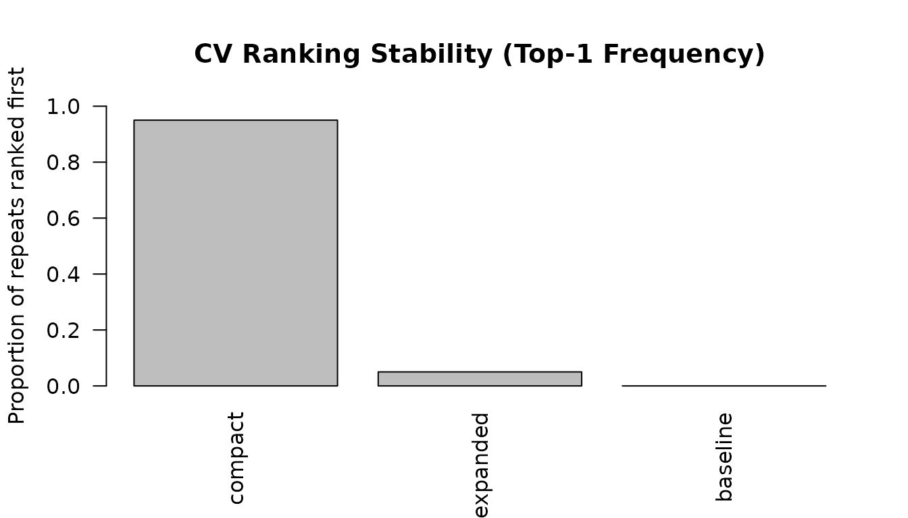
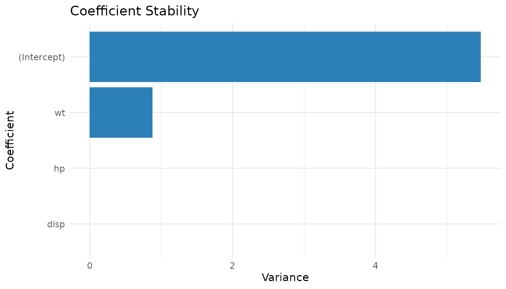
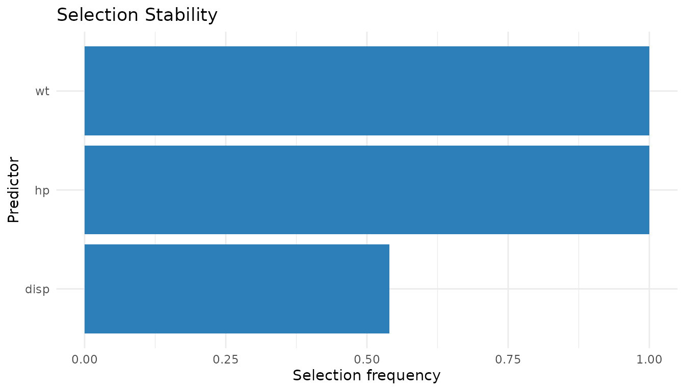

Overview
ReproStat provides tools for diagnosing the reproducibility of statistical modeling workflows. The central idea is to perturb the data in small ways (bootstrap, subsampling, or noise) and measure how much model outputs change across perturbations. Stable outputs imply high reproducibility; volatile outputs flag potential concerns.
The package computes:
- Coefficient stability – variance of estimates across perturbations.
- P-value stability – frequency of significant findings.
- Selection stability – frequency of variable selection.
- Prediction stability – variance of predictions.
- Reproducibility Index (RI) – a composite 0–100 score.
Basic workflow
Step 1: Run diagnostics
mt_diag <- run_diagnostics(
mpg ~ wt + hp + disp,
data = mtcars,
B = 200,
method = "bootstrap"
)
mt_diag
#> ReproStat Diagnostics
#> ---------------------
#> Formula : mpg ~ wt + hp + disp
#> Backend : lm
#> Method : bootstrap
#> Iterations: 200
#> Terms : (Intercept), wt, hp, dispStep 2: Inspect individual metrics
coef_stability(mt_diag)
#> (Intercept) wt hp disp
#> 6.709592e+00 1.040656e+00 1.229663e-04 7.452477e-05
pvalue_stability(mt_diag)
#> wt hp disp
#> 0.905 0.840 0.015
selection_stability(mt_diag)
#> wt hp disp
#> 1.000 1.000 0.515
prediction_stability(mt_diag)$mean_variance
#> [1] 0.9650964Step 3: Compute the reproducibility index
reproducibility_index(mt_diag)
#> $index
#> [1] 88.77472
#>
#> $components
#> coef pvalue selection prediction
#> 0.9188745 0.8200000 0.8383333 0.9737808Step 4: Visualise
oldpar <- par(mfrow = c(1, 2))
plot_stability(mt_diag, "coefficient")
plot_stability(mt_diag, "selection")
par(oldpar)Perturbation methods
Three perturbation strategies are supported:
# Bootstrap resampling (default)
run_diagnostics(mpg ~ wt + hp, mtcars, method = "bootstrap")
# Subsampling (80 % of rows without replacement)
run_diagnostics(mpg ~ wt + hp, mtcars, method = "subsample", frac = 0.8)
# Gaussian noise injection (5 % of each column's SD)
run_diagnostics(mpg ~ wt + hp, mtcars, method = "noise", noise_sd = 0.05)Model comparison with CV ranking stability
Use cv_ranking_stability() to compare multiple candidate
models across repeated cross-validation runs.
models <- list(
baseline = mpg ~ wt + hp + disp,
compact = mpg ~ wt + hp,
expanded = mpg ~ wt + hp + disp + qsec
)
cv_result <- cv_ranking_stability(models, mtcars, v = 5, R = 40)
cv_result$summary
#> model mean_rmse sd_rmse mean_rank top1_frequency
#> 1 compact 2.684893 0.1629443 1.050 0.95
#> 2 expanded 2.811187 0.1605096 2.425 0.05
#> 3 baseline 2.798253 0.1474168 2.525 0.00
plot_cv_stability(cv_result, metric = "top1_frequency")
Working with other datasets
The package is dataset-agnostic. Any data frame with a numeric response and numeric predictors works:
iris_diag <- run_diagnostics(
Sepal.Length ~ Sepal.Width + Petal.Length + Petal.Width,
data = iris,
B = 150,
method = "noise",
noise_sd = 0.03
)
reproducibility_index(iris_diag)
#> $index
#> [1] 99.99019
#>
#> $components
#> coef pvalue selection prediction
#> 0.9996922 1.0000000 1.0000000 0.9999156For datasets with missing values, subset to complete cases first:
aq <- na.omit(airquality[, c("Ozone", "Solar.R", "Wind", "Temp")])
aq_diag <- run_diagnostics(
Ozone ~ Solar.R + Wind + Temp,
data = aq,
B = 150,
method = "bootstrap"
)
reproducibility_index(aq_diag)
#> $index
#> [1] 89.77414
#>
#> $components
#> coef pvalue selection prediction
#> 0.7181772 0.8888889 1.0000000 0.9838995Uncertainty in the RI: bootstrap confidence interval
ri_confidence_interval() resamples the stored
perturbation draws to estimate uncertainty in the RI without refitting
any models.
set.seed(20260307)
d <- run_diagnostics(mpg ~ wt + hp + disp, mtcars, B = 150)
ri_confidence_interval(d, level = 0.95, R = 500)
#> 2.5% 97.5%
#> 86.89235 90.23516Modeling backends
ReproStat supports four backends. All use the same API; only the
backend argument changes.
# Generalized linear model (logistic)
run_diagnostics(am ~ wt + hp, mtcars, B = 100,
family = stats::binomial())
# Robust regression (requires MASS)
if (requireNamespace("MASS", quietly = TRUE))
run_diagnostics(mpg ~ wt + hp, mtcars, B = 100, backend = "rlm")
# LASSO (requires glmnet)
if (requireNamespace("glmnet", quietly = TRUE))
run_diagnostics(mpg ~ wt + hp + disp + qsec, mtcars,
B = 100, backend = "glmnet", en_alpha = 1)ggplot2 helpers
If ggplot2 is installed,
plot_stability_gg() and plot_cv_stability_gg()
return ggplot objects that can be further customised.
if (requireNamespace("ggplot2", quietly = TRUE)) {
set.seed(1)
d_gg <- run_diagnostics(mpg ~ wt + hp + disp, mtcars, B = 50)
print(plot_stability_gg(d_gg, "coefficient"))
print(plot_stability_gg(d_gg, "selection"))
}
